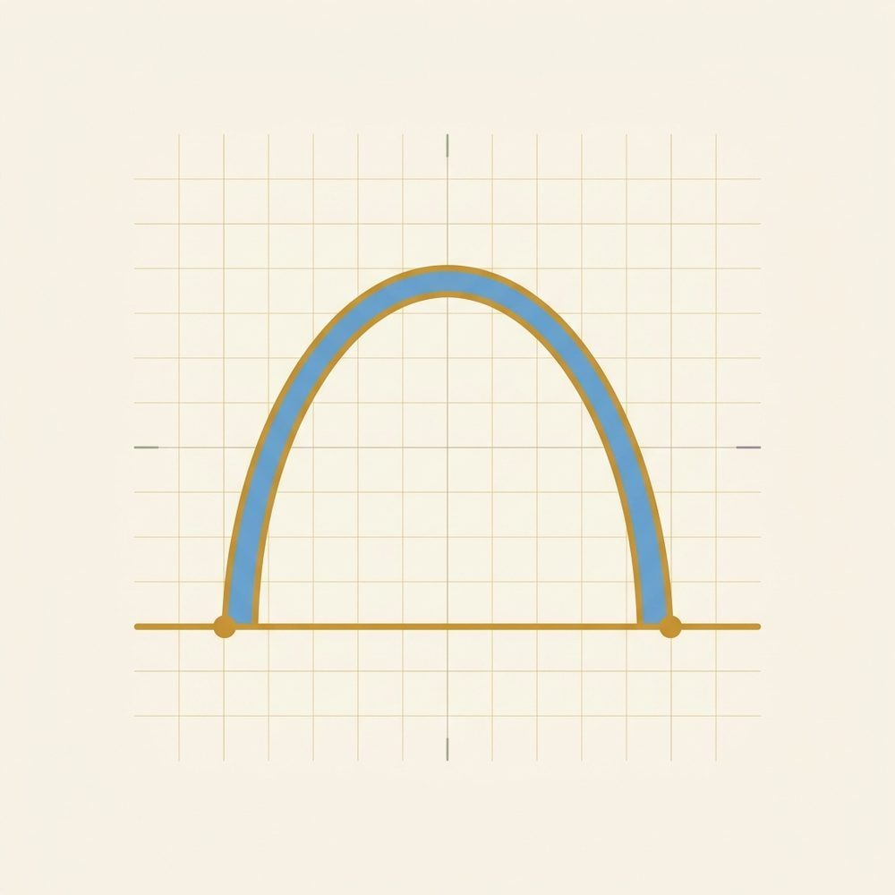

Quadratic Functions & Equations (the capstone)
Square roots & radicals, x²=9, factoring, completing the square, quadratic formula, parabolas

This unit is about equations with a squared term, the kind that shape a thrown ball's arc or the size of a rectangle. They are worth learning because they show up everywhere a quantity grows and then turns back, and because solving them ties together a lot of what you've already done. It helps to have a little practice with squaring numbers fresh in mind before you start.
This unit pulls together most of what came before. It rests on one small, steady idea that you'll meet in the very first lesson and then see everywhere: squaring throws away a sign. Once that idea is in your hands, a few surprises ahead all turn out to be the same fact wearing different clothes.
Those surprises are that a squared equation usually has two answers, that a little ± sign shows up in every method, and that the graph is a U shape. They are one idea, not three separate rules.
Unit 12 · Reference card
Quadratic Functions & Equations
You can now…
- solve a pure square equation with the square-root method,
- solve by factoring using the zero-product property,
- solve any quadratic with the quadratic formula,
- picture a quadratic as a U-shaped parabola.
Key methods
Square-root method (for x squared equals a number)
$$ x^2=k\ \Longrightarrow\ x=\pm\sqrt{k} $$Zero-product property (after factoring)
$$ \text{if } A\cdot B=0,\ \text{then } A=0 \text{ or } B=0 $$Quadratic formula (works for every quadratic)
$$ x=\dfrac{-b\pm\sqrt{b^2-4ac}}{2a} $$Two quick examples
Square-root method: x² = 49
$$ x=\pm\sqrt{49}=\pm 7 $$Factoring: x² − 5x + 6 = 0
$$ (x-2)(x-3)=0\ \Rightarrow\ x=2,\ 3 $$The shape
Every quadratic graphs as a parabola — a smooth U. It opens up when a > 0 and down when a < 0, with a single turning point called the vertex.
A word before you start, and it holds for every lesson here. You don't have to finish a lesson in one sitting. If a page stops landing, take a break and come back. A rest helps, and you lose nothing. And when you return for a new lesson, redo two or three problems from a lesson or two back from memory first. That small warm-up is one of the most useful habits you can keep.